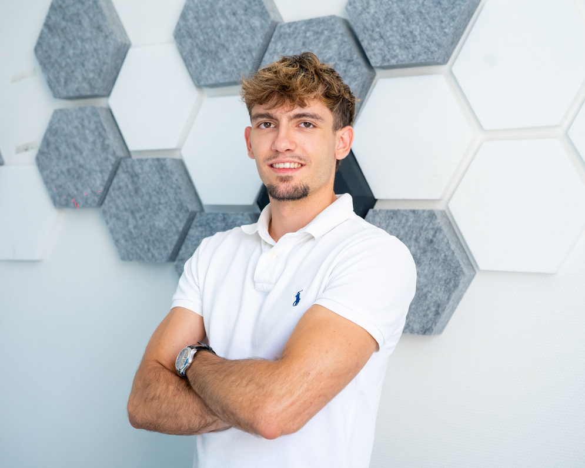

Tableau de bord photovoltaïque
Une interface TV qui rassemble production photovoltaïque, autoconsommation et météo.
Développement web
& cybersécurité
Dès le

Du webdesign aux interfaces connectées, je construis des projets pour des besoins concrets. Aujourd’hui en Pré-MSc à Epitech, je développe mes bases en systèmes, réseaux et cybersécurité.
Du besoin à la réalisation
Une interface TV qui rassemble production photovoltaïque, autoconsommation et météo.
Un site vitrine animé pour une marque de maroquinerie, de la maquette à la mise en ligne.
Mon fil conducteur
Le webdesign m’a appris à penser une interface. Mes projets professionnels m’ont confronté à sa réalisation et à son usage. À Epitech, je veux approfondir ce qui se passe derrière l’écran.
Explorer mon parcours ↗